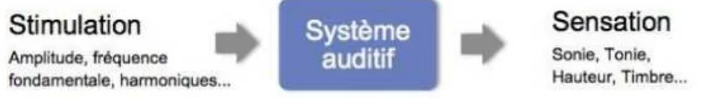
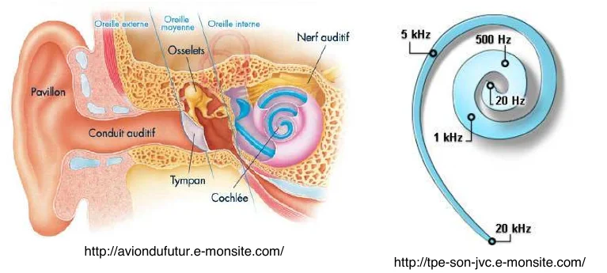
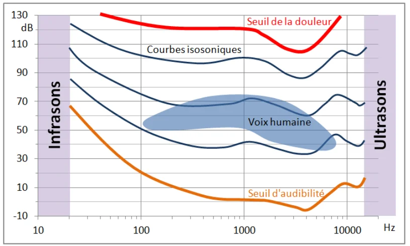
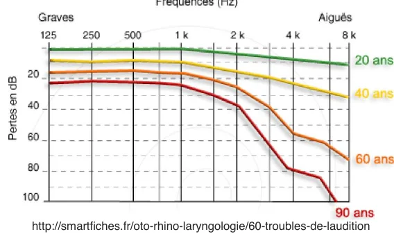
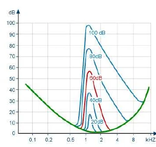
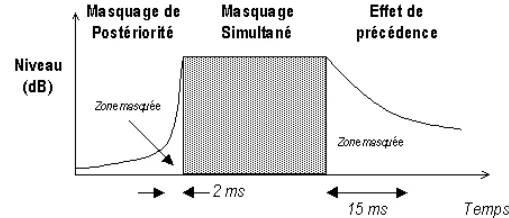
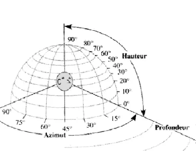
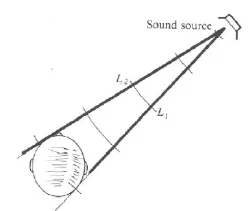
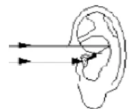
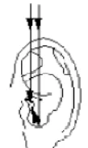

L'audition est le seul sens capable de nous informer sur des événements survenant hors de notre champ de vision, et l'un des plus « précoces » : le fœtus entend dès le 6ème mois alors qu'il ne voit qu'à partir du 7ème. C'est également l'un des sens les plus variables d'une personne à l'autre, et il évolue peut être encore plus que la vision au cours d'une vie.
Pour qu'il contienne une information, il faut que le son varie lui-même au cours du temps et qu'il ne varie pas de façon aléatoire, mais selon des motifs que les auditeurs peuvent mémoriser et reconnaître. En outre, l'audition s'adapte en quelques instants aux sons qui parviennent à l'oreille, en une fraction de seconde par un réflexe et à partir de quelques secondes par des processus mentaux.
La psychoacoustique est une branche de psychologie expérimentale qui relie les sensations auditives de l'être humain aux sons qui parviennent à ses oreilles.

Du point de vue « physique », les unités de mesure sont donc le dB, les Hz, …
Du point de vue des sensations, on parle de sonie (niveau sonore) en sones ou phones, de hauteur (différence graves-aigus) ou de tonie en mel, de chroma (position dans l'octave), … Ces valeurs sont toutefois peu utilisées hormis par des spécialistes.
Le timbre est la caractérisation d'un son en termes d'harmoniques : durée, amplitude, … Il permet de distinguer divers sons présentant la même intensité, la même hauteur, voire la même durée et pourtant perçus comme différents.

L'oreille externe collecte les sons et les canalise jusqu'au tympan qui fonctionne comme la peau d'un tambour et vibre en réaction aux ondes sonores. Ce n'est autre que notre antenne…
L'oreille moyenne est composée d'une chaîne de trois osselets, le marteau, l'enclume et l'étrier en relation avec la cochlée. Leur rôle est de « transporter » (d'amplifier) les vibrations du tympan vers l'oreille interne.
L'oreille interne est la partie la plus complexe (et la plus fragile) du système auditif. Les vibrations de l'étrier créent une onde qui se transmet par l'intermédiaire d'un fluide vers les cellules ciliées qui émettent alors un signal électrochimique au nerf auditif, signal qui sera perçu par le cerveau comme un son. C'est le système de décodage… Elle réagit à chaque fréquence en des lieux différents.
L'acuité auditive humaine est la bande passante des fréquences perceptibles par l'oreille humaine ainsi que le seuil de leur perceptibilité.
En théorie l'oreille humaine est censée percevoir des fréquences comprises entre 20 Hz et 16 à 20 kHz. Mais au-delà de 5 kHz, l'oreille n'est plus capable de faire la différence entre deux sons, quelle que soit leur fréquence. Par anthropomorphisme, on considère donc généralement que les ondes sonores s'étendent de 20Hz à 16kHz.
Dans la plage audible, on peut de plus « partager » les plages de fréquences en sons graves ou aigus :
| Plage de fréquence | Type d'onde |
|---|---|
| < 4Hz | Ondes sismiques |
| 4 à 16 Hz | Infrasons |
| 16 à 150 Hz | Extrême grave |
| 150 à 250 Hz | Grave ou basse |
| 250 à 1500 Hz | Médium |
| 1500 à 3500 Hz | Aigu |
| 3500 à 16 kHz | Extrême aigu |
| > 16 kHz | Ultrason |
Remarque : Les infrasons sont inaudibles mais perçus par le corps humain, en particulier au niveau du squelette et de la cage thoracique. Omniprésents en particuliers dans les villes, ils sont typiquement produits par les moteurs (poids-lourds et autres compresseurs) et constituent la principale pollution sonore. A très faible intensité, ils procurent un sentiment de « solennité » et sont utilisés dans certaines musiques religieuses (orgues d'église, percussions sacrées africaines). A plus forte intensité, ils ont des effets secondaires tels que nausées, dépressions, … A forte intensité, ils sont rapidement mortels (canons à infrasons).
La sensibilité de notre organe auditif n'est pas linéaire, elle varie en fonction de la fréquence et du niveau sonore. L'oreille possède un maximum de sensibilité pour des fréquences comprises entre 2 et 5 kHz (pointe à 4 kHz). De ce fait, deux sons de fréquences différentes mais de même intensité peuvent provoquer une sensation de force sonore différente
Il existe un seuil « absolu » de perception (valeur en dessous de laquelle la perception est impossible) indiqué sur les courbes d'isosonie pour chaque fréquence et un seuil « relatif » (variation minimale pouvant être perçue, de l'ordre de 0,4 dB).
Le son perceptible le plus ténu est par convention défini à 0 dB à 1000Hz, ce qui implique un seuil de valeur négative de quelques dB à 4000Hz, ne dépassant que très légèrement le fond sonore créé spontanément par le mouvement des molécules composant l'air ambiant et perçu par certaines personnes souffrant d'hyperacousie.
Les sons forts, considérés comme potentiellement traumatisants au-delà de 120 dB, ont une puissance mille milliards de fois supérieure (un rapport d'intensité acoustique de 1012 à 1) au seuil d'audibilité.
Les courbes d'isosonie sont déterminées statistiquement en présence d'ondes planes (ou assimilées à des ondes planes) et de sons purs. Aux fréquences audibles, l'aire délimitée par le seuil d'audition (en orange) et le seuil d'inconfort (en rouge, c'est aussi le seuil des sons traumatiques pour l'oreille) définit le champ auditif, domaine de sensation auditive ou aire d'audition. Une ligne isosonique représente l'ensemble des sons purs produisant la même sensation d'intensité, la même sonie, en fonction de la fréquence.

| dB | Exemple de source de bruit | Conversation | Effet auditif |
|---|---|---|---|
| 180 | Fusée Ariane au décollage | Impossible | Dégradation irréversible de l'oreille |
| 160 | Fusil d'assaut | ||
| 140 | Réacteur d'avion supersonique à quelques mètres | ||
| 130 | |||
| 125 | Sirène de pompiers, Vuvuzela | Douleur | |
| 120 | Décollage d'un avion à 20m | ||
| 115 | Formule 1 | ||
| 110 | Pointes musicales d'orchestres, Fusil | En criant | |
| 105 | MP3 à pleine puissance, Métro | Difficilement supportable Bruits très pénibles Seuil de danger |
|
| 100 | Marteau piqueur à 3m, Concert de rock, Klaxon | ||
| 95 | Scie circulaire, Discothèque, Orchestre classique, Ateliers très bruyants | ||
| 90 | TGV à 25m des voies, Aboiement proche, Moto à 1m, Restaurant scolaire | ||
| 85 | Tronçonneuse | Difficile | Seuil de risque |
| 80 | Chorale, Débroussailleuse, Machines outils, Intérieur voiture à 100km/h, Nœud routier très fréquenté, Bord d'autoroute, Atelier | ||
| 75 | Instrument de musique, sonnerie du téléphone | ||
| 70 | Carrefour avec feux, rue à gros trafic, boulevard | En parlant fort | Pénible, nocif |
| 65 | Aspirateur | Bruyant | |
| 60 | Intérieur de voiture, Voie de transit, Centre ville, Bureau de dactylo, Grand magasin | Seuil de fatigue | |
| 55 | Radio, Télévision, Rue résidentielle | Bruits courants | |
| 50 | Salle de classe, Appartement bruyant | Voix normale | |
| 45 | Lave-vaisselle, Secteur résidentiel | ||
| 40 | Appartement calme | Calme | |
| 35 | Silence à la campagne | Voix basse | |
| 30 | Voiliers, trombone tombant sur du carrelage | ||
| 25 | Nuit en milieu rural | Silencieux (très calme) | |
| 20 | Bruissement des feuilles par vent léger | ||
| 10 | Désert, Forêt silencieuse, Studio d'enregistrement | Silence paraissant anormal | |
| 0 | Salle anéchoïde (chambre sourde) | Seuil d'audibilité à 1000Hz | |
| -4 | Fond sonore de l'air ambiant | Seuil d'audibilité à 4000Hz |
Noter qu'il est théoriquement possible de remarquer une variation du niveau sonore de 1dB mais que, en pratique et en particulier en présence de bruit ambiant, cette valeur est plus généralement de l'ordre de 3dB Centre d'Information sur le Bruit – Paris.
Presbyacousie : Perte progressive de l'audition, généralement bilatérale et symétrique liée à l'âge et variable d'une personne à l'autre (souvent plus prononcée chez les hommes par exemple) mais se remarquant dès 18 ans dans les fréquences élevées. Elle affecte la perception de la parole, en particulier pour les consonnes sifflantes (s, z, ch) et les fricatives (f, v).

Effet cocktail : il reflète notre capacité à sélectionner une source sonore dans un environnement bruyant tout en restant capable de traiter des signaux autres. C'est le cas typique de la réception bruyante pendant laquelle notre attention est fixée sur ce que dit notre interlocuteur en occultant le bruit ambiant tout en restant capable de détecter si notre nom est prononcé par une tierce personne dans la salle.
A noter toutefois que cet effet, qui privilégie en réalité les sons provenant d'une direction donnée et utilise les composantes aigues des sons perçus (voir la localisation sonore), est moins présent chez les personnes âgées.
Syndrome du banquet : phénomène inverse de l'effet cocktail, il révèle l'incapacité de certaines personnes à suivre un flux verbal dans une ambiance bruyante. Il serait dû à une lésion de l'oreille interne, à une hyperacousie, ou inversement à la presbyacousie.
Hyperacousie : dysfonctionnement de l'audition caractérisé par une hypersensibilité de l'ouïe à certaines fréquences. Une personne atteinte d'hyperacousie ne pourra ainsi pas tolérer certains sons perçus comme normaux par les autres personnes, ni tolérer les environnements bruyants. Les fréquences touchées et le niveau d'intensité seuil varient d'une personne à l'autre. Cette pathologie atteindrait 2 % de la population. L'origine en serait essentiellement neuronale. Certains sujets hyperacousiques présentent par ailleurs une difficulté à échantillonner les sons : un faible bruit perturbe la perception d'un bruit pourtant plus fort, au même titre que dans le « syndrome du banquet ».
Hypoacousie, surdité : Etat pathologique de l'audition caractérisé par une perception des sons significativement moindre que la normale. Des accidents, des maladies, l'exposition à des niveaux sonores excessifs répétés provoquent une perte de sensibilité de l'oreille qui peut être partielle, généralement vers 3 à 4 kHz, plage de fréquences où l'oreille est la plus sensible.
Oreille absolue (<1% de la population) : C'est une capacité à reconnaître et nommer une note sans référence préalable, associée généralement à une faculté de discrimination fine entre les fréquences. Semble nécessiter à la fois une aptitude génétique et une pratique assidue et précoce du solfège. C'est une sorte de mémorisation de la fréquence « en soi ». Elle implique aussi une liaison entre les fonctions cérébrales liées à l'audition (partie droite du cerveau) et celles liées au langage (partie gauche du cerveau), qui permettent de donner un nom à ces sons.
Oreille relative : Capacité à reconnaitre une note par référence à un diapason. C'est une mémorisation du rapport de fréquence. Dans le langage courant, on parle d'oreille musicale.
Oreille harmonique : capacité à reconnaitre des intervalles harmoniques, c'est-à-dire l'écart de hauteur (fréquence) séparant deux sons joués simultanément.
On parle de masquage quand un son est rendu inaudible par un autre. Il existe plusieurs sortes d'effets de masque.

Masque simultané : L'effet le plus connu est qu'en présence de deux sons d'intensités différentes, le plus intense provoque une diminution de la sonie du plus faible par rapport à ce qu'elle serait sans le son masquant. C'est l'effet « addition logarithmique » vue plus haut : un son est négligeable tant que, seul, il reste d'une intensité inférieure à une dizaine de dB par rapport au plus sonore.
L'effet est notable lorsque les sons sont proches du point de vue de leur hauteur tonale (fréquence) et situés dans une même « bande critique » de l'oreille, quasiment négligeable si les fréquences sont différentes (différence nécessaire de 100 Hz en sons graves et jusqu'à 5kHz en sons aigus).
Cette figure montre les seuils auditifs obtenus sans masquage en vert, puis avec un masquage par un bruit (fréquences de 1100 à 1300 Hz) à divers niveaux d'intensité Lorenzi, Antoine: Psychoacoustique, Cochlea.
Effet de durée : La perception augmente jusqu'à une valeur maximale pour des sons d'une durée de 50 à 400ms puis décroit légèrement.
Effet de postériorité : Un son bref émis moins de 2ms avant un son masquant est négligé.
Effet de précédence (effet de Haas) : Après avoir entendu un son relativement fort, source primaire, l'oreille a besoin d'un certain temps avant d'être à nouveau capable d'entendre un son d'une source secondaire qui, dans d'autres circonstances, lui paraitrait parfaitement audible. A noter que cet effet est également présent dans la localisation d'un son.

Effet d'anticipation : Lorsque l'auditeur s'attend à l'émission d'un son fort, le niveau sonore perçu est plus faible que lorsqu'il ne s'y attend pas. Cela est particulièrement vrai dans le cas des sons brefs de fréquences médiums et de niveau supérieur à 80dB (réflexe stapédien de rigidification de l'oreille moyenne).
Glissandis : Divers chercheurs ont créé des illusions sonores. En particulier les « glissandi sans fin » de Shepard et Risset sont l'équivalent auditif des escaliers sans fin de Escher : ils donnent l'illusion de sons constamment montants ou descendants. D'autres illusions peuvent être créées, en particulier portant sur la hauteur des sons perçus.
Effet McGurk : c'est un phénomène perceptif qui montre une interférence entre l'audition et la vision, en particulier lors de la perception de la parole de quelqu'un parlant devant nous. L'expérience démontre que, dans certains cas, nous « percevons » un son moyen ou intermédiaire entre ce que nous nous attendons à entendre d'après ce que nous voyons et ce que nous entendons réellement.
Corrélation entre localisation et intérêt : Les chercheurs travaillant sur la localisation de l'origine d'un son par l'homme ont constaté que nous avons tendance à situer devant nous un son auquel nous apportons de l'intérêt, et derrière nous un bruit ambiant. Cela se ressent en particulier si, assis dans un fauteuil en écoutant la radio placée à quelques mètres derrière nous, nous accordons soudain plus d'intérêt au programme sans tourner la tête pour autant.
Source : voir en particulier le cours de C. Gabriel cité en référence Gabriel, C.: Acoustique et psychoacoustique, Haute Ecole Libre de Bruxelles Ilya Prigogine.

Elle repose sur trois dimensions spatiales : l'azimut (gauche-droite), l'élévation ou le plan vertical (haut-bas, devant-derrière), et la distance ou profondeur. Chacune de ces dimensions fait appel à des fonctionnements différents de l'audition.
Ce fonctionnement est étudié en salle anéchoïde (chambre sourde), c'est-à-dire en l'absence de tout bruit parasite lié à l'environnement. Dans un milieu plus naturel et en particulier en présence de bruits diffus et de sources de réflexions (ou réfractions) sonores, localiser un son revient parfois à réaliser une course poursuite dans un labyrinthe de miroirs… Et pourtant ! Ne serait-ce que grâce à l'effet cocktail, nous « tendons l'oreille » au son qui nous intéresse et les mouvements du corps peuvent apporter plus de précision à la localisation en reliant ces mouvements à la perception auditive d'autant que les propriétés d'un son, y compris sa direction d'origine, ne changent généralement que lentement, et pas toutes à la fois.

Elle utilise essentiellement le principe de précédence (ou effet de Haas) en écoute binaurale. C'est-à-dire que les deux composantes principales sont la différence entre les temps d'arrivée aux deux oreilles liée à leur écartement, et la différence d'intensité liée à l'obstacle que représente la tête (essentiellement par diffraction).

Plus précisément, la localisation se fait sur le premier son perçu, pourvu que le premier des suivants ne lui soit pas supérieur de plus de 10dB et qu'il ait un retard d'au moins 5ms pour des sons brefs, 40ms pour des sons complexes. C'est ce qui est utilisé par exemple en stéréophonie (en « jouant » sur ce retard) pour donner la sensation d'une source de son virtuelle distincte des deux sources réelles.
Mais la différence de temps d'arrivée n'est significative que pour des sources proches, et la différence d'intensité pour des sons aigus.
Pour des sons plus graves, on constate un effet lié au déphasage dû aux différences de parcours et à la réflexion sur le pavillon. On note en outre que la géométrie particulière du pavillon permet de faire la distinction entre un son provenant de l'avant et un son provenant de l'arrière mais également d'en aider à la localisation par des effets de modification du spectre du signal. C'est la localisation monaurale.

La localisation en hauteur est plus complexe, et repose évidemment beaucoup moins sur l'écoute binaurale que sur une écoute monaurale. Elle se base essentiellement sur les diffractions et déphasages dus au pavillon. Elle n'est significative que pour des sons aigus (plus de 5kHz) et l'expérience montre de plus que lorsque des sources respectivement grave et aigue sont placées à la même hauteur, la source aigue est perçue subjectivement plus élevée que la source grave.
Plus précisément, les sons de fréquence voisine de 8kHz semblent venir du haut, ceux de 700Hz à 2kHz ainsi que ceux de 10 à 15kHz semblent venir de l'arrière et ceux de 250 à 500Hz ou de 2 à 6kHz semblent venir de devant.
Elle se base sur le niveau sonore, mais également sur la proportion de champ libre (ondes parvenant directement à l'oreille) et de champ réverbéré (sons renvoyés par l'environnement) ainsi que sur le temps d'arrivée lorsque la source est visible et, dans une moindre mesure sur la densité spectrale, les aigus étant plus absorbés par l'air que les graves lorsque la source est lointaine. Ainsi, des sons dont le contenu est inférieur à 2KHz semblent provenir d'une source plus éloignée que les sons de fréquences plus élevées.
L'incertitude de localisation en azimut est généralement de :
Celle de localisation en hauteur est généralement de :
En général, la distance est sous estimée par rapport à la réalité, souvent dans un coefficient de 2 à 3…
Ces incertitudes diminuent fortement si nous avons la possibilité de nous déplacer significativement de la source sonore et de tourner la tête vers la source initialement estimée.
Noter également que, comme vu précédemment, l'effet de précédence est plus efficace pour les sons aigus. Par ailleurs, bien qu'ils soient plus amortis que les sons graves sur de grandes distances, les sons aigus se propagent dans l'air de manière beaucoup plus directionnelle que les graves. Il est donc plus facile de détecter la direction précise d'une source aigue, mais cela nécessite une bonne audition des aigus, incompatible avec la presbyacousie.